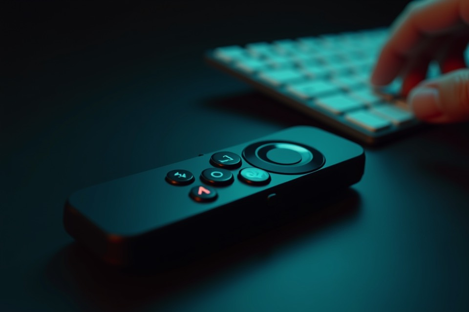
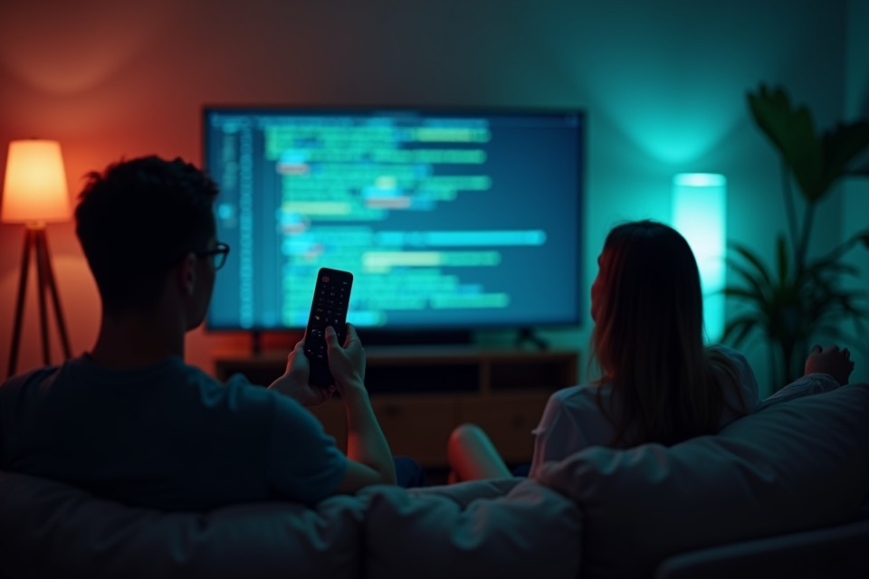
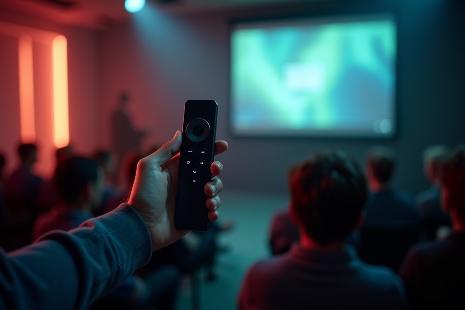
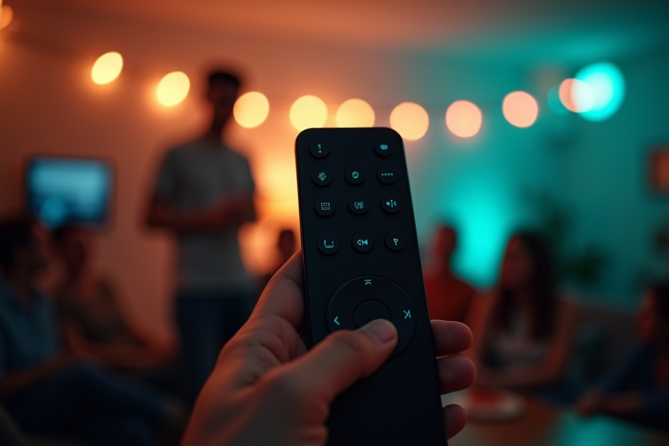
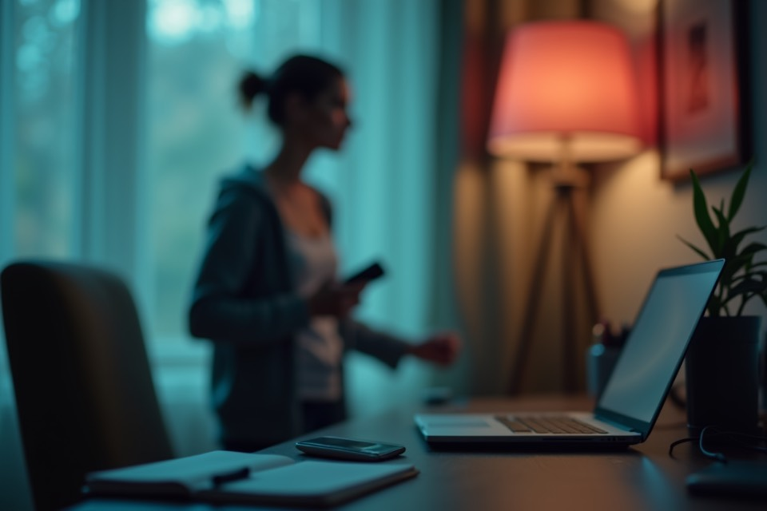
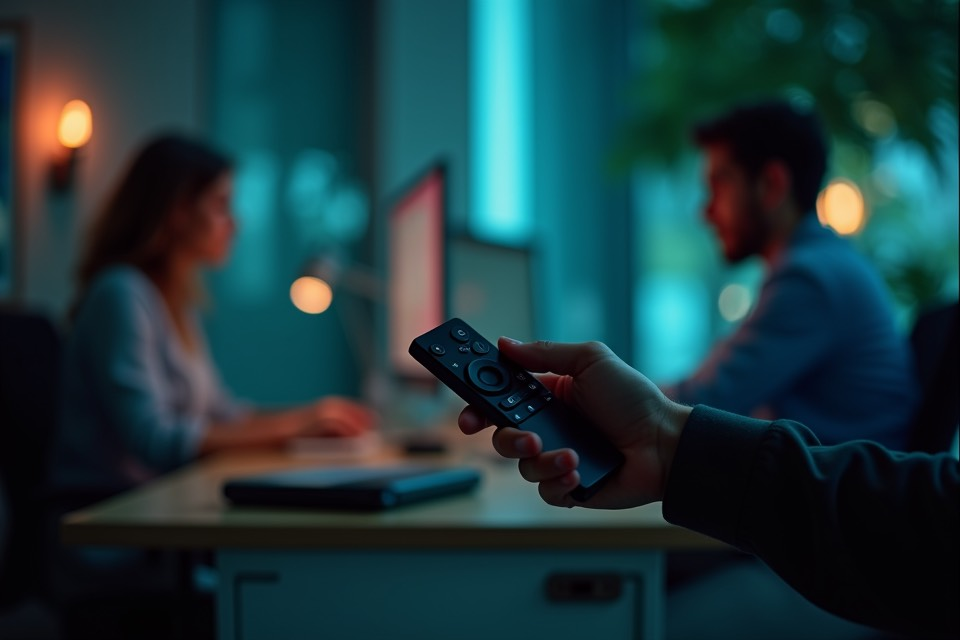

Vibe Coding
Hold the voice button, speak a prompt, release, and keep your hands near the keyboard.
Reuse an Android TV voice remote as a push-to-talk microphone for your Mac. VibeKey presents itself as plain USB input, so your coding setup gets voice on demand without apps, hubs, or AI setup inside VibeKey.

Hold the voice button, speak a prompt, release, and keep your hands near the keyboard.

Use your Mac on the big screen and talk to your coding tools from the sofa.

Keep a tiny voice controller in hand while you drive slides, demos, or search.

A familiar remote is easy to pass around when music, search, or quick dictation happens in the room.

Capture ideas while pacing around the room instead of returning to the desk for every sentence.

Push-to-talk keeps the mic intentional, so quiet coding notes do not become an always-on situation.
Why a Voice Remote
Press to talk, release to stop. It feels ready whenever you call for it, without leaving a hot mic open.
Give an old Android TV voice remote a new job instead of buying a dedicated desktop microphone.
Two AAA batteries are enough for a remote that waits quietly until you press the voice button.
VibeKey behaves like USB input hardware, so your Mac can use it without a special voice stack.
Button behavior is stored on VibeKey, so the setup stays with the hardware when you move it.
It appears as a regular microphone input, which makes it compatible with the apps you already use.
The voice path is tuned for speech clarity, short prompts, and reliable push-to-talk capture.
VibeKey is pure hardware emulation: it shows up as USB input and sends microphone/button events to your Mac. No AI model, phone app, cloud service, or companion device is required by VibeKey itself.
Lifetime License
One-time authorization for VibeKey software behavior. The $20 early access price is license only; hardware is purchased separately.
User Voices
I tried a desk mic first, but it made every pause feel recorded. With the remote I press, say one sentence, and it is clearly over when I let go.
The best part is that my apps just see a microphone. I did not have to teach every tool a new device or keep a second helper app alive.
I had two unused TV remotes in a drawer. Turning one into a coding mic was cheaper than buying another gadget, and it survives being tossed in a bag.
For code review notes, short prompts are all I need. A push-to-talk button keeps it quicker than reaching for the menu bar or changing audio settings.